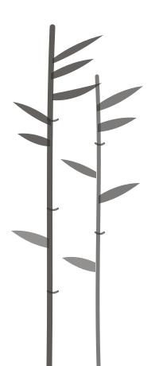

What is Yuhua Zhai
什么是雨花斋
雨花斋是一个自发的、公益的、非盈利性的免费互助素食餐厅；是利益社区空巢、鳏寡、孤独老人的大餐桌；是中华传统文化的力行地；也是各界人士播种爱心、收获幸福的试验田。
在这里，油盐酱醋、粮米蔬菜，皆由各界爱心人士自愿捐赠。就餐者无论是否参与捐赠，一律免费供餐。从厨师到服务员，全部由义工志愿者担任。餐桌之上，人们互称“家人”。

Origin
源起 · 从建德到全国
缘起
雨花长老的慈悲大爱
最初的倡议者释文全长老，几十年如一日提倡、推广素食，被人们尊称为“雨花长老”。长老于第一家雨花斋开业后一年去世。
2011
全国第一家雨花斋
雨花长老的弟子大行法师传承、发扬长老慈悲大爱的精神，在浙江杭州建德指导创办了全国第一家免费互助素食餐厅“雨花斋”，并将中华优秀传统文化理念融入其中。
其后
如雨后春笋，遍布全国
北京、上海、杭州、长春、青岛、温州、合肥、芜湖、广州、深圳、贵阳、长沙、中山等多个城市陆续开办。全国各地雨花斋已达近千家。
今天
敬老助老，日日不辍
多数雨花斋提供免费午餐，也有提供早餐、午餐，乃至一日三餐者，基本一年三百六十五天，天天开业，把爱源源不断地送往每一位需要的人。

雨花之名
雨花，是众生命的代表，处在世中的生命实相，如雨中的花。花代表美好的人生，雨代表所处的环境。体会不同处境下的人生状态，改善我们生存的环境——这是雨花人共同搭建的实现人生意义的平台。

七七现象
雨花斋每天提供志愿服务最多的是老人：用餐人群中百分之七十以上是老人，服务的志愿者中也有百分之七十是低龄老人。以老助老、邻里守望，成为一道温暖的风景。
雨花斋不仅是一间免费素食餐厅，更是一处弘扬中华传统美德的特殊课堂。
—— 摘自社会评价了解，是参与的开始
走进理念，读懂这一碗素饭背后的心意。